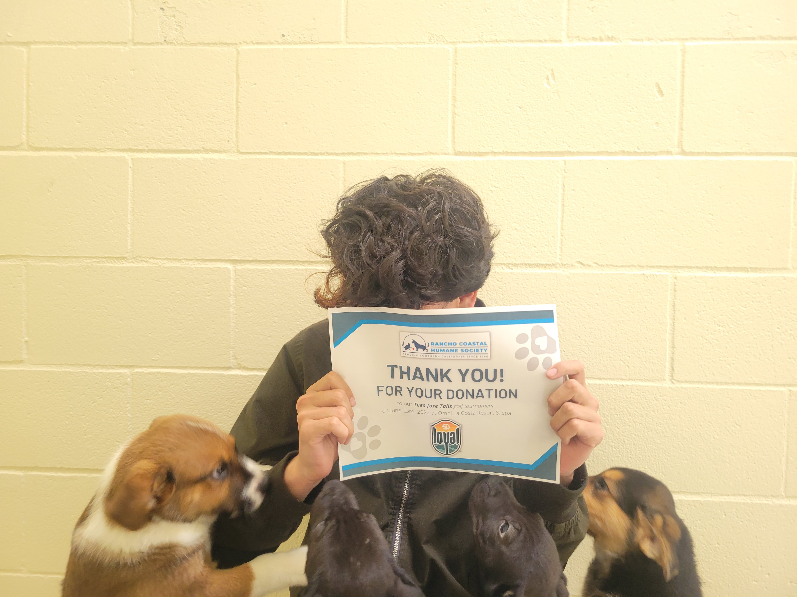
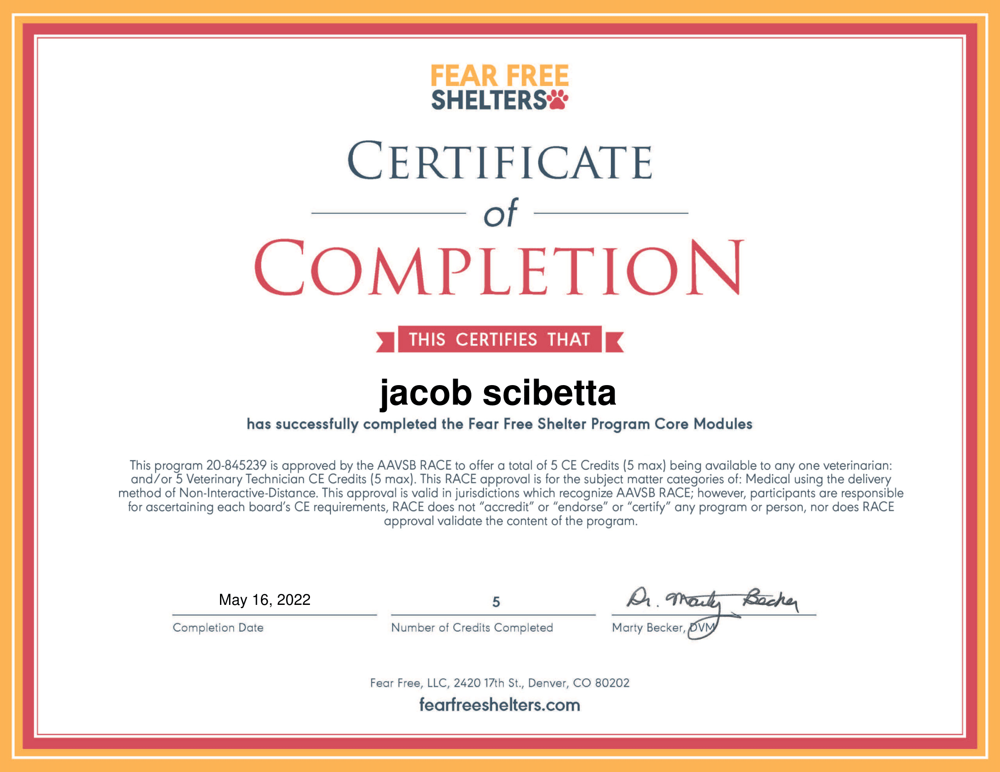

It has a lot of offices and rooms and connecting places
What strikes you most about your colleagues?
They are all very friendly. (which is great)
What strikes you most about the job you're doing?
It is really interesting to learn about what you need to know about animals to care for them in a shelter sort of habitat
What are you looking forward to during your Internship?
Putting what I'm currently learning to the test.
What wonderings do you have about your role and/or your workplace?
I don't really have many
subway
sans
subway
Blog #2
What are you learning about yourself as a worker in a professional environment?
I'm able to work independently and at a timely pace.
What are your strengths?
I am able to work independently, Collaborate, and time management among many other skills.
What do you enjoy most about your work?
I enjoy the independence that i am given as well as the tasks. It as been lots of fun observing and shadowing other people that work here learning about what there jobs consist of.
What do you dislike about your work experience? This doesn’t necessarily mean you dislike your work; however, maybe you are learning that you prefer to be active or like office work. We want you to identify types of work that you enjoy with the hope that this helps you identify jobs that may be a strong fit for you.
I really don't dislike anything about my work here. I would like to work outside the office / other tasks that don't involve sitting at a computer but those will come in the future as right now I just have to train and develop ideas.
What areas of your work do you want to continue to improve?
My knowledge of animals and their behaviors as well as more information on how nonprofits work.
How would you compare your current experience to work you’ve done in the past?
I have used canva.
How is your experience shaping your thoughts about your future career path?
Its just showing me that i have a lot to learn about a future job
Blog #3
How is your work as an intern meaningful to your education?
It is teaching me more about the world and other jobs in it, As well as giving me more experience with animals
How is your work significant or meaningful to the world beyond school and your specific internship site?
My work will (hopefully) teach others in the world about ways to understand their animals and ways to decrease their stress.
How will your project go from an idea or inspiration to a final product?
It has been in the planning stages for about 2 weeks and it is finally ready to turn into a product. I will be recording video and then editing it creating a reel of different educational videos for anyone to watch.
What qualities or characteristics do you see in the people around you that you want to develop in yourself? Why?
The quality of taking risks and leadership. I like to play things safe. If something is sketchy, I tend to try and do all the research around it before I take the shot. If something is risky I try to do the same. But most of the time I avoid it. I see risks (of course educated risks) being taken and transformed into great decisions that can be made into learning experiences here. Working with animals is a risk in itself.
How is your view of life beyond high school changing or developing during your time as an intern? / How might this internship experience influence the direction of your life?
This being my first real workplace experience has opened my eyes to a lot of different paths. My main goal before this internship was really to try and become a musician, scoring movies or video games. While that is still one of my greatest passions, I have acquired more over my time here. Learning about animals has really piqued my interest in the work that goes on in a shelter. The shelter workers really put in a lot of time to help them experience a better life in the shelter until they can be adopted into a home that's an even better place for them to live. But that isn't all! I have sat into board meetings, i've learned how to read a sheet of expenses and predictions, i've looked at electrical maps, cad sheets, looked into the inner workings of a non profit organization, interviewed a really amazing ceo/president (my mentor), and so much more. There are so many careers in this world that aren't just making fast food or working at walmart. So many fascinating jobs, so many interesting professions. Having this experience has honestly changed my view on work. Of course I knew other jobs existed. I just never had the up close look into any of them so it was as if they were almost invisible to me. Knowledge that they exist but without having the experience I never fully gained the appreciation.
Photo Essay
After somone adopts an animal from RCHS a year after there adoption they are greeted with a nice letter in the mail. This comes with a photo of their pet before they were taken. I helped put them together this year!
Rancho Costal Humane Society was preparing for a mass food giveaway that I asisted in on saturday.

Taking thank you photos for people who have donated to us
This is the first time ive ever taken public transit, its been a pretty cool expiriance!

I took an online course so that I could gain expiriance with animals as well as helping out the shelter